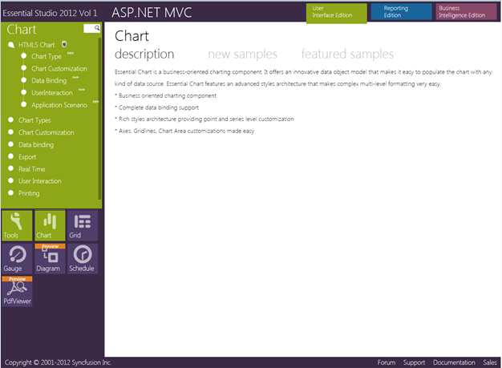

This section covers the location of the installed samples and describes the procedure to run the samples through the sample browser and online. It also lists the location of utilities, assemblies and source code.
Sample Installation Location
The ASP.NET MVC samples are installed in the following location, locally on the disk:
...\My Documents\Syncfusion\EssentialStudio\<Version Number>\MVC\chartmvc\Samples\3.5
Viewing Samples
To view the samples, follow the steps below:
1. Click Start-->All Programs-->Syncfusion-->Essential Studio <version number> -->Dashboard. Syncfusion Essential Studio Dashboard <version number> window is displayed.

Figure 1: Syncfusion Essential Studio Dashboard
2. In the Dashboard window, click Run Samples for ASP.NET MVC in the User Interface Edition panel. The ASP.NET MVC Sample Browser window is displayed.

Figure 2: ASP.NET MVC Sample Browser
3. Click Essential Chart under Other Products. The Chart samples are displayed.

Figure 3: Chart Samples Displayed in the ASP.NET MVC Sample Browser
4. Select any sample and browse through the features.
Source Code Location
The default location of the Essential Chart MVC source code is:
[System Drive]:\Program Files\Syncfusion\Essential Studio\<Version Number>\MVC\Chart.MVC